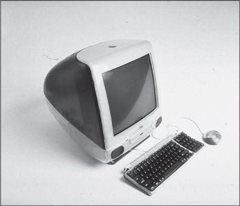

The first great design triumph to come from the Jobs-Ive collaboration was the iMac, a desktop computer aimed at the home consumer market that was introduced in May 1998. Jobs had certain specifications. It should be an all-in-one product, with keyboard and monitor and computer ready to use right out of the box. It should have a distinctive design that made a brand statement. And it should sell for $1,200 or so. (Apple had no computer selling for less than $2,000 at the time.) “He told us to go back to the roots of the original 1984 Macintosh, an all-in-one consumer appliance,” recalled Schiller. “That meant design and engineering had to work together.”
乔布斯和艾弗搭档之后的第一个成功之作就是iMac——面向家用电子市场的台式计算机，于1998年5月问世。此前，乔布斯对这个产品有明确的说明：它应该是一个一体化的产品，键盘、显示器和主机被组合到一个简单的装置中，从箱子里面拿出来就能用；而且设计要独特，要能体现品牌文化；价格定在1200美元左右（当时苹果公司没有标价在2000美元以下的计算机）。“他告诉我们，要回到1984年第一台Mac电脑那个设计理念，设计成一体式的消费电子产品。”席勒回忆道，“这就意味着设计部门和工程部门必须要通力合作。”
The initial plan was to build a “network computer,” a concept championed by Oracle’s Larry Ellison, which was an inexpensive terminal without a hard drive that would mainly be used to connect to the Internet and other networks. But Apple’s chief financial officer Fred Anderson led the push to make the product more robust by adding a disk drive so it could become a full-fledged desktop computer for the home. Jobs eventually agreed.
最初的计划是开发一款“网络计算机”（networkcomputer）,这一概念得到了甲骨文公司的拉里·埃利森的支持，特指一种廉价的、没有硬盘驱动器的终端，主要用来连接互联网和其他网络。但是苹果公司的首席财务官弗雷德·安德森认为，为了使产品更加动力强劲，还是要增设一个磁盘驱动器，这样它就可以成为一台正式的家用台式计算机。乔布斯最终采纳了他的建议。
Jon Rubinstein, who was in charge of hardware, adapted the microprocessor and guts of the PowerMac G3, Apple’s high-end professional computer, for use in the proposed new machine. It would have a hard drive and a tray for compact disks, but in a rather bold move, Jobs and Rubinstein decided not to include the usual floppy disk drive. Jobs quoted the hockey star Wayne Gretzky’s maxim, “Skate where the puck’s going, not where it’s been.” He was a bit ahead of his time, but eventually most computers eliminated floppy disks.
负责硬件的部门主管乔恩·鲁宾斯坦，决定给计划中的新机器采用苹果专业类专业版电脑PowerMacG3的微处理器和内核，并安装了一个硬盘驱动器和一个光盘托盘。但是乔布斯和鲁宾斯坦作了一个大胆的决定——新机器不再配备普遍使用的软盘驱动器。乔布斯引用了冰球明星韦恩·格雷茨基（WayneGretzky）的名言：“要向着冰球运动的方向滑，而不是它现在的位置。”在当时他这个做法非常前卫，但是最终大多数计算机都取消了软盘驱动器。
Ive and his top deputy, Danny Coster, began to sketch out futuristic designs. Jobs brusquely rejected the dozen foam models they initially produced, but Ive knew how to guide him gently. Ive agreed that none of them was quite right, but he pointed out one that had promise. It was curved, playful looking, and did not seem like an unmovable slab rooted to the table. “It has a sense that it’s just arrived on your desktop or it’s just about to hop off and go somewhere,” he told Jobs.
艾弗和他的第一助理丹尼·柯斯特（DannyCoster）开始计划这种未来主义的设计。乔布斯不客气地否决了他们最初设计的几十个模型，然而艾弗知道怎么去温和地弓丨导他。艾弗认同所有的模型都不完美，但是他指出了其中一个有希望的——曲线形的有趣外观，看上去也不像是一块钉在桌子上挪不走的板子。“它带着一种刚刚来到你桌上，又随时可能会飞到其他地方的感觉。”他这样告诉乔布斯。
By the next showing Ive had refined the playful model. This time Jobs, with his binary view of the world, raved that he loved it. He took the foam prototype and began carrying it around the headquarters with him, showing it in confidence to trusted lieutenants and board members. In its ads Apple was celebrating the glories of being able to think different, yet until now nothing had been proposed that was much different from existing computers. Finally, Jobs had something new.
在下一次展示之前，艾弗又完善了这个模型。这一次，乔布斯带着他那“不是杰作就是狗屎”的评判标准喊着说他喜欢。他带着泡沫模型在总部到处走，充满信心地向他信赖的中层和董事会成员们展示。苹果公司一直在广告中宣传自身所做的一切都“非同凡想”。然而直到那时，也没有人提出过什么东西让苹果计算机区别于市面上的其他计算机。这一次，乔布斯终于有了新玩意儿。
The plastic casing that Ive and Coster proposed was sea-green blue, later named bondi blue after the color of the water at a beach in Australia, and it was translucent so that you could see through to the inside of the machine. “We were trying to convey a sense of the computer being changeable based on your needs, to be like a chameleon,” said Ive. “That’s why we liked the translucency. You could have color but it felt so unstatic. And it came across as cheeky.”
艾弗和柯斯特提出要把机箱塑料外壳设计成海蓝色——之后这种颜色被命名为“邦迪蓝”，灵感来自澳大利亚的邦迪海滩。而且外壳是半透明的，你可以看到机器内部。“我们想要传递一种感觉，就是计算机能够根据我们的需求而改变，就像变色龙那样。”艾弗说，“这就是我们喜欢半透明的原因。虽然有固定的颜色，却又不呆板，可以一眼看到里面，有种调皮的感觉。”
Both metaphorically and in reality, the translucency connected the inner engineering of the computer to the outer design. Jobs had always insisted that the rows of chips on the circuit boards look neat, even though they would never be seen. Now they would be seen. The casing would make visible the care that had gone into making all components of the computer and fitting them together. The playful design would convey simplicity while also revealing the depths that true simplicity entails.
无论是比喩还是现实，这种半透明都把内部的工程学构造和外壳设计联系在了一起。乔布斯一直坚持要让芯片整齐地排列在电路板上，即使它们不会被人们看到也要这么做。但现在，它们能被人看见了。通过这个半透明外壳，人们将能够看到乔布斯对产品的用~心，而这种用心贯穿于所有元件的制造以及组装的过程中。这种有趣的设计将传达简约的理念，同时也体现出真正达到简约所需要的深度。
Even the simplicity of the plastic shell itself involved great complexity. Ive and his team worked with Apple’s Korean manufacturers to perfect the process of making the cases, and they even went to a jelly bean factory to study how to make translucent colors look enticing. The cost of each case was more than $60 per unit, three times that of a regular computer case. Other companies would probably have demanded presentations and studies to show whether the translucent case would increase sales enough to justify the extra cost. Jobs asked for no such analysis.
在这如此简约的塑料外壳中也蕴涵着十足的复杂性。艾弗和他的团队与苹果公司在韩国的制造商合作，力求制作出完美的产品，他们甚至去了一家生产糖豆的工厂，学习如何把半透明色彩做得更富活力。每只外壳的成本超过60美元，是普通计算机外壳成本的3倍。换做其他公司，可能会就此进行专门论证，讨论半透明外壳是否能帮助提升销量，并证明额外的成本是值得的。但乔布斯对这种论证不予考虑。
Topping off the design was the handle nestled into the iMac. It was more playful and semiotic than it was functional. This was a desktop computer; not many people were really going to carry it around. But as Ive later explained:
他们还在iMac外壳的顶部设计了一个内嵌的提手。它的趣味性和象征意义要大于其功能性。这是一台台式计算机，不会有什么人提着它到处走。但艾弗是这样想的：
Back then, people weren’t comfortable with technology. If you’re scared of something, then you won’t touch it. I could see my mum being scared to touch it. So I thought, if there’s this handle on it, it makes a relationship possible. It’s approachable. It’s intuitive. It gives you permission to touch. It gives a sense of its deference to you. Unfortunately, manufacturing a recessed handle costs a lot of money. At the old Apple, I would have lost the argument. What was really great about Steve is that he saw it and said, “That’s cool!” I didn’t explain all the thinking, but he intuitively got it. He just knew that it was part of the iMac’s friendliness and playfulness.
当时，人们对科技并不“感冒”。当你畏惧一样东西的时候，你不会去触碰它。我就看到我妈妈不敢碰计算机。所以我就想，如果它上面有个提手，就能使一种关系变为可能。它是易于接近的，是与生俱来的，它允许你去触摸它。它使你觉得它与众不同。糟糕的是，要制造一个凹陷的提手需要大量投入。这要是在以前的苹果公司，我的想法肯定会被否决。让人惊喜的是，乔布斯第一眼看到它的时候就说了一句，“这太酷了！”我从没向他解释过为何要这样做，但他就是自然而然地领会了。他认为，这就是iMac友好及有趣的方面之一。
Jobs had to fend off the objections of the manufacturing engineers, supported by Rubinstein, who tended to raise practical cost considerations when faced with Ive’s aesthetic desires and various design whims. “When we took it to the engineers,” Jobs said, “they came up with thirty-eight reasons they couldn’t do it. And I said, ‘No, no, we’re doing this.’ And they said, ‘Well, why?’ And I said, ‘Because I’m the CEO, and I think it can be done.’ And so they kind of grudgingly did it.”
乔布斯还要面对制造工程部门的反对，这些反对者得到了鲁宾斯坦的支持。面对艾弗对美学的需求和“异想天开”，鲁宾斯坦提出了现实的关于成本的考虑。“当我们把做提手的建议提交给工程部门时，”乔布斯说，“他们提出了38种不能这么做的理由。然后我就说，‘不，不，我就是要这么做。’然后他们问，‘那么，为什么？’我回答道，‘就是因为我是CEO，我认为这么做没问题。’结果他们就这么不情愿地照做了。”
Jobs asked Lee Clow and Ken Segall and others from the TBWA\Chiat\Day ad team to fly up to see what he had in the works. He brought them into the guarded design studio and dramatically unveiled Ive’s translucent teardrop-shaped design, which looked like something from The Jetsons, the animated TV show set in the future. For a moment they were taken aback. “We were pretty shocked, but we couldn’t be frank,” Segall recalled. “We were really thinking, ‘Jesus, do they know what they are doing?’ It was so radical.” Jobs asked them to suggest names. Segall came back with five options, one of them “iMac.” Jobs didn’t like any of them at first, so Segall came up with another list a week later, but he said that the agency still preferred “iMac.” Jobs replied, “I don’t hate it this week, but I still don’t like it.” He tried silk-screening it on some of the prototypes, and the name grew on him. And thus it became the iMac.
乔布斯还邀请TBWA\Chiat\Day广告公司的李·克劳和肯·西格尔一行人来到苹果，看看这里正在做的事情。他把他们带进戒备森严的设计工作室，并戏剧性地展示了艾弗设计的半透明的泪滴形外壳，看起来很像20世纪80年代一部电视动画片《杰森一家》（TheJetsons）里关于未来的场景。在那一瞬间，他们就像回到了从前。“我们非常震惊，但没人敢说出来。”西格尔回忆道，“我们的真实想法是，‘天哪，他们知道自己在做什么吗？’这简直太出格了。”乔布斯请他们给这台计算机起个名字。西格尔给出了五个，其中一个就是“iMac”。起初，乔布斯哪个都不喜欢，所以西格尔在一周后又拿出了一张列表，但是他说他的公司还是更倾向于“iMac”。乔布斯回答说：“现在我倒觉得这个名字不那么讨厌了，不过也算不上喜欢。”随后他试着把这个名字印在一些模型上，然后接受了它。iMac的名称由此诞生。
As the deadline for completing the iMac drew near, Jobs’s legendary temper reappeared in force, especially when he was confronting manufacturing issues. At one product review meeting, he learned that the process was going slowly. “He did one of his displays of awesome fury, and the fury was absolutely pure,” recalled Ive. He went around the table assailing everyone, starting with Rubinstein. “You know we’re trying to save the company here,” he shouted, “and you guys are screwing it up!”
离iMac完工的日子越来越近了，乔布斯那传说中的坏脾气又冒了出来，尤其是遇到生产方面的问题时。在一次产品测评会上，他发现制造的进度变慢了。“他表现出令人恐惧的愤怒，而且是绝对纯粹的愤怒。”艾弗回忆道。乔布斯围着桌子走了一圈，从鲁宾斯坦开始，把每个人都挨个儿骂了一顿。“知道吗，我们是在努力拯救公司，”他大喊，“而你们却要把它毁了！”
Like the original Macintosh team, the iMac crew staggered to completion just in time for the big announcement. But not before Jobs had one last explosion. When it came time to rehearse for the launch presentation, Rubinstein cobbled together two working prototypes. Jobs had not seen the final product before, and when he looked at it onstage he saw a button on the front, under the display. He pushed it and the CD tray opened. “What the fuck is this?!?” he asked, though not as politely. “None of us said anything,” Schiller recalled, “because he obviously knew what a CD tray was.” So Jobs continued to rail. It was supposed to have a clean CD slot, he insisted, referring to the elegant slot drives that were already to be found in upscale cars. “Steve, this is exactly the drive I showed you when we talked about the components,” Rubinstein explained. “No, there was never a tray, just a slot,” Jobs insisted. Rubinstein didn’t back down. Jobs’s fury didn’t abate. “I almost started crying, because it was too late to do anything about it,” Jobs later recalled.
和当年的Mac团队一样，iMac团队也是跌跌撞撞地赶在发布会的前一刻完工了，但还是没能逃过“最后一劫”。在一次发布会预演中，鲁宾斯坦赶制了两台样机。在此之前，包括乔布斯在内，所有人都没有见过最后的成品。乔布斯在台上看到，在机器的前方、显示屏的下方有一个按钮。他按了一下按钮，CD托盘弹了出来。“这他妈是什么鬼东西?！”他一点儿也不客气。“我们谁都没有说话，”席勒回忆说，“因为他当然知道那个是CD托盘。”乔布斯继续责骂。他坚持说，这原本应该是一个干净利落的CD插槽，就像髙档汽车里用的那种优雅的吸入式光驱。盛怒之下，他把席勒赶出了演讲厅。席勒于是向鲁宾斯坦求救。“史蒂夫，这就是当时我们讨论组件时我向你展示的光驱。”鲁宾斯坦解释道。“不，从来就没有托盘，只有一个插槽。”乔布斯坚持着。鲁宾斯坦也没有让步。乔布斯的愤怒一点儿都没有减弱。“我当时几乎要哭出来了，因为要作任何改变都为时已晚。”乔布斯后来回忆道。
They suspended the rehearsal, and for a while it seemed as if Jobs might cancel the entire product launch. “Ruby looked at me as if to say, ‘Am I crazy?’” Schiller recalled. “It was my first product launch with Steve and the first time I saw his mind-set of ‘If it’s not right we’re not launching it.’” Finally, they agreed to replace the tray with a slot drive for the next version of the iMac. “I’m only going to go ahead with the launch if you promise we’re going to go to slot mode as soon as possible,” Jobs said tearfully.
他们停止了预演，接下来的那一刻，大家认为乔布斯似乎要取消整个产品发布会。“鲁比①看着我，就好像在说：‘我疯了吗？’”席勒回忆道，“这是我和乔布斯合作的第一个品发布会，我也第一次明白了他的心态：如果有什么不劲儿就干脆取消。”最终，他们达成了共识——在下一代iMac中把托盘变成插槽。“只有确定了我们将尽快生产插槽式光驱，我才可以放心地筹备发布会。”说到这里，乔布斯已经眼含泪水。
There was also a problem with the video he planned to show. In it, Jony Ive is shown describing his design thinking and asking, “What computer would the Jetsons have had? It was like, the future yesterday.” At that moment there was a two-second snippet from the cartoon show, showing Jane Jetson looking at a video screen, followed by another two-second clip of the Jetsons giggling by a Christmas tree. At a rehearsal a production assistant told Jobs they would have to remove the clips because Hanna-Barbera had not given permission to use them. “Keep it in,” Jobs barked at him. The assistant explained that there were rules against that. “I don’t care,” Jobs said. “We’re using it.” The clip stayed in.
此外，他计划展示的一段视频也出现了问题。在这段视频中，乔尼·艾弗向大家讲解他的设计理念，并问大家：“你们认为‘杰森一家’应该拥有什么样的计算机？这在昨天看来遥不可及。”这时，会出现一个两秒钟的卡通片段：简·杰森正看着一个屏悬；接下来的两秒钟片段是杰森一家在圣诞树前咯咯地笑。在预演中，一个制作助理告诉乔布斯，他们必须要删掉这四秒钟的画面，因为他们没有得到哈娜-巴贝拉（Hanna-Barberra）制作公司的许可。“我就要放在这儿！”乔布斯冲他喊道。那个助理向他觯释这样做会违反相关法规。“我才不在乎，”乔布斯说，“我们就要用它。”最后这段视频被保留了。
Lee Clow was preparing a series of colorful magazine ads, and when he sent Jobs the page proofs he got an outraged phone call in response. The blue in the ad, Jobs insisted, was different from that of the iMac. “You guys don’t know what you’re doing!” Jobs shouted. “I’m going to get someone else to do the ads, because this is fucked up.” Clow argued back. Compare them, he said. Jobs, who was not in the office, insisted he was right and continued to shout. Eventually Clow got him to sit down with the original photographs. “I finally proved to him that the blue was the blue was the blue.” Years later, on a Steve Jobs discussion board on the website Gawker, the following tale appeared from someone who had worked at the Whole Foods store in Palo Alto a few blocks from Jobs’s home: “I was shagging carts one afternoon when I saw this silver Mercedes parked in a handicapped spot. Steve Jobs was inside screaming at his car phone. This was right before the first iMac was unveiled and I’m pretty sure I could make out, ‘Not. Fucking. Blue. Enough!!!’”
李·克旁正在准备一系列彩色的杂志广告。他给乔布斯发了一些排版后的打样，很快便接到了乔布斯怒气冲冲的电话。乔布斯坚持说广告中的蓝色和他们挑出来的iMac照片上的蓝色不一致。“你们这帮家伙不知道自己在千什么，”乔布斯嚷道，“我要另找别人做这个广告，因为你们把它给毁了。”克劳反驳道：“你再去比比看。”乔布斯根本不在办公室里，却一直坚称自己是对的，而且不停地喊叫。最后，克劳让他冷静地坐下来，再对比一下原始的照片。“我最终向他证明了这个蓝色就是他要的那个蓝色。”几年之后，在Gawker网的“史蒂夫·乔布斯讨论区”里冒出来一个帖子，发帖人曾经在加州帕洛奥图的全食超市（WholeFoods）工作，这家超市离乔布斯的住宅只隔几个街区。帖子写道：“一天下午，我正在整理购物车，看到一辆银色的奔驰停在残疾人停车位上。史蒂夫·乔布斯正在车里对着他的车载电话大喊大叫。当时正值第一代iMac发布之前，所以我肯定没有听错，他在大喊：‘去他妈的！不够蓝！！！’”
As always, Jobs was compulsive in preparing for the dramatic unveiling. Having stopped one rehearsal because he was angry about the CD drive tray, he stretched out the other rehearsals to make sure the show would be stellar. He repeatedly went over the climactic moment when he would walk across the stage and proclaim, “Say hello to the new iMac.” He wanted the lighting to be perfect so that the translucence of the new machine would be vivid. But after a few run-throughs he was still unsatisfied, an echo of his obsession with stage lighting that Sculley had witnessed at the rehearsals for the original 1984 Macintosh launch. He ordered the lights to be brighter and come on earlier, but that still didn’t please him. So he jogged down the auditorium aisle and slouched into a center seat, draping his legs over the seat in front. “Let’s keep doing it till we get it right, okay?” he said. They made another attempt. “No, no,” Jobs complained. “This isn’t working at all.” The next time, the lights were bright enough, but they came on too late. “I’m getting tired of asking about this,” Jobs growled. Finally, the iMac shone just right. “Oh! Right there! That’s great!” Jobs yelled.
一直以来，乔布斯都会绞尽脑汁准备掲幕时那戏剧性的一刻。就在上次的预演因为CD托盘事件而中止之后，他又预演了好几次，以确保在正式发布会上令人瞩目。他一次次地演练那个高xdx潮时刻——他走到舞台另一边，掲开遮布，然后宣布：“向新的iMac问好吧。”他要求灯光恰到好处，把iMac的半透明效果衬托得栩栩如生。但是在几次预演之后，他仍然不满意，这也让人想起了1984年Mac电脑发布会预演时的那一幕，当时斯卡利目睹了他在舞台灯光上的纠结：他要求把灯光再调亮一些，而且开得再提早一些，但是他始终不满意。最后他走下舞台，坐在观众席正中央的位子上，把两条腿搭在前排的椅背上。“你们调吧，直到调好为止。”他说。工作人员又尝试了一次。“不对，不对。”乔布斯抱怨道，“这根本不行。”又试了一次，这次灯光的亮度够了，但出现得太晚。“我已经懶得再说你们了。”乔布斯喊道。最后，iMac终于在灯光下闪亮登场。“对了！就是这样！非常好！”乔布斯兴奋地大叫。
A year earlier Jobs had ousted Mike Markkula, his early mentor and partner, from the board. But he was so proud of what he had wrought with the new iMac, and so sentimental about its connection to the original Macintosh, that he invited Markkula to Cupertino for a private preview. Markkula was impressed. His only objection was to the new mouse that Ive had designed. It looked like a hockey puck, Markkula said, and people would hate it. Jobs disagreed, but Markkula was right. Otherwise the machine had turned out to be, as had its predecessor, insanely great.
一年之前，乔布斯把他早期的导师兼合作者迈克·马库拉从董事会开除。但是出于对iMac的自豪之情，以及iMac与Mac之间千丝万缕的联系，乔布斯把马库拉邀请到苹果总部，让他提前看一下产品。马库拉觉得iMac棒极了，但他唯一反对的就是艾弗设计的鼠标，他说它看起来太像一个冰球了，人们不会喜欢的。乔布斯不同意他的观点，但后来事实证明，马库拉是对的。除此之外，iMac像它的前辈Mac电脑一样无与伦比——
注释：
①鲁比，鲁宾斯坦的昵称。
With the launch of the original Macintosh in 1984, Jobs had created a new kind of theater: the product debut as an epochal event, climaxed by a let-there-be-light moment in which the skies part, a light shines down, the angels sing, and a chorus of the chosen faithful sings “Hallelujah.” For the grand unveiling of the product that he hoped would save Apple and again transform personal computing, Jobs symbolically chose the Flint Auditorium of De Anza Community College in Cupertino, the same venue he had used in 1984. He would be pulling out all the stops in order to dispel doubts, rally the troops, enlist support in the developers’ community, and jump-start the marketing of the new machine. But he was also doing it because he enjoyed playing impresario. Putting on a great show piqued his passions in the same way as putting out a great product.
在1984年的Mac电脑发布会上，乔布斯就创造了一套新的舞台效果——产品发布就像一场划时代的盛会，整场盛会以“要有光”①的神圣时刻为高xdx潮：天地分开、一束光射下来、天使歌唱、唱诗班合唱《哈利路亚》。而对此次产品发布盛会，乔布斯有两个希望，一是使苹果公司起死回生，二是再次颠覆个人计算机的形象。因此，乔布斯特意为这次发布会选择了库比蒂诺市迪安扎社区大学的燧石礼堂（Flint）,这也是举办1984年发布会的地点。为了消除疑虑、重整旗鼓、在开发者社区获得支持，并快速启动iMae营销，他愿意全力以赴。不过，他这么做的另外一个原因就是他很喜欢做“发布会总指挥”。和酝酿新产品一样，准备一场盛会也能大大激发他的热情。
Displaying his sentimental side, he began with a graceful shout-out to three people he had invited to be up front in the audience. He had become estranged from all of them, but now he wanted them rejoined. “I started the company with Steve Wozniak in my parents’ garage, and Steve is here today,” he said, pointing him out and prompting applause. “We were joined by Mike Markkula and soon after that our first president, Mike Scott,” he continued. “Both of those folks are in the audience today. And none of us would be here without these three guys.” His eyes misted for a moment as the applause again built. Also in the audience were Andy Hertzfeld and most of the original Mac team. Jobs gave them a smile. He believed he was about to do them proud.
他还不忘显示自己多愁善感的一面。作为开场白，他首先对着第一排观众席上的三位嘉宾礼貌地“喊话”。他曾经和这三个人渐行渐远，但是现在，他需要他们重新加入他的团队。“我曾经和史蒂夫·沃兹尼亚克在我父母家的车库里成立了苹果公司，现在，他就在这里。”他说着，用手指向沃兹，观众爆发出一阵掌声。“后来，迈克·马库拉加入了我们。不久之后，我们还迎来了我们的第一任总裁，迈克·斯科特。”他接着说，“他们今天都来到了现场。如果没有他们三个人，今天我们谁也不会来到这里。”掌声又响了起来，他的眼眶湿润了。观众席中还有安迪·赫茨菲尔德以及当年Mac团队昀大部分成员。乔布斯向他们微笑示意。他的笑容中带着一种信心，他相信，接下来自己会让他们感到自豪。
After showing the grid of Apple’s new product strategy and going through some slides about the new computer’s performance, he was ready to unveil his new baby. “This is what computers look like today,” he said as a picture of a beige set of boxy components and monitor was projected on the big screen behind him. “And I’d like to take the privilege of showing you what they are going to look like from today on.” He pulled the cloth from the table at center stage to reveal the new iMac, which gleamed and sparkled as the lights came up on cue. He pressed the mouse, and as at the launch of the original Macintosh, the screen flashed with fast-paced images of all the wondrous things the computer could do. At the end, the word “hello” appeared in the same playful script that had adorned the 1984 Macintosh, this time with the word “again” below it in parentheses: Hello (again). There was thunderous applause. Jobs stood back and proudly gazed at his new Macintosh. “It looks like it’s from another planet,” he said, as the audience laughed. “A good planet. A planet with better designers.”
在用幻灯片展示了苹果公司新的产品策略和新计算机的性能之后，他准备掲幕他的新宝贝了。“现在的计算机是这副样子的。”他说着，身后的大屏幕上出现了一套米色的、方方正正的计算机配件和显示器。“而我要荣幸地向你们展示，从今天起，计算机会变成什么样子。”他掲开了舞台中央桌子上的遮布，灯光洒下，新的iMac闪现在大家面前，熠熠生辉。他按了一下鼠标，就像在Mac电脑的发布会上那样，屏幕上快速闪现着介绍计算机各种奇妙用途的图片。最后，“你好”（hello）的字样出现了，用的还是1984年Mac电脑上的字体，但是这一次在“你好”下面还加了一个括号，里面写着“又见面了”（again）——你好（又见面了）。这一刻，雷鸣般的掌声再次响起。乔布斯站在那儿，自豪地看着他的新iMac。“它看起来像是从外星来的。”他说，观众大笑，“显然是来自一个不错的星球，那儿的设计师更棒。”
Once again Jobs had produced an iconic new product, this one a harbinger of a new millennium. It fulfilled the promise of “Think Different.” Instead of beige boxes and monitors with a welter of cables and a bulky setup manual, here was a friendly and spunky appliance, smooth to the touch and as pleasing to the eye as a robin’s egg. You could grab its cute little handle and lift it out of the elegant white box and plug it right into a wall socket. People who had been afraid of computers now wanted one, and they wanted to put it in a room where others could admire and perhaps covet it. “A piece of hardware that blends sci-fi shimmer with the kitsch whimsy of a cocktail umbrella,” Steven Levy wrote in Newsweek, “it is not only the coolest-looking computer introduced in years, but a chest-thumping statement that Silicon Valley’s original dream company is no longer somnambulant.” Forbes called it “an industry-altering success,” and John Sculley later came out of exile to gush, “He has implemented the same simple strategy that made Apple so successful 15 years ago: make hit products and promote them with terrific marketing.”
乔布斯又一次推出了标志性的新产品，也是一个新纪元的开端。它履行了“非同凡想”的承诺。计算机不再是米色的方形主机和显示器、缠得一团糟的电线和厚厚的安装手册；在你面前的是一部友好的、生气蓬勃的装置，手感顺滑、赏心悦目，就像一只知更鸟的蛋②。你可以拎着那可爱的小提手把它从典雅的白色盒子里面提出来，然后插上电源。那些以前害怕碰计算机的人现在也想拥有一台，而且他们还想把它摆在房间中最显眼的地方，好让人羡慕甚至是嫉妒。“这是一台结合了科幻之光和奇思妙想的机器，”《新闻周刊》的记者史蒂文·列维这样写道，“这不仅是近几年来推出的外观最酷的计算机，同时也是一个强有力的宣告：硅谷这家最初的‘梦想’公司终于不再‘梦游’了！”《福布斯》将iMac称为“一个产业的华丽转身”。已被驱逐的约翰·斯卡利也表示：“他采用的是和15年前一样的简单策略——制造大受欢迎的产品，发动无比强大的营销攻势。这个策略让当时的苹果公司大获成功。”
Carping was heard from only one familiar corner. As the iMac garnered kudos, Bill Gates assured a gathering of financial analysts visiting Microsoft that this would be a passing fad. “The one thing Apple’s providing now is leadership in colors,” Gates said as he pointed to a Windows-based PC that he jokingly had painted red. “It won’t take long for us to catch up with that, I don’t think.” Jobs was furious, and he told a reporter that Gates, the man he had publicly decried for being completely devoid of taste, was clueless about what made the iMac so much more appealing than other computers. “The thing that our competitors are missing is that they think it’s about fashion, and they think it’s about surface appearance,” he said. “They say, We’ll slap a little color on this piece of junk computer, and we’ll have one, too.”
一个熟悉的声音又在吹毛求疵了。iMac屡获殊荣之际，比尔·盖茨确信这只是一时的潮流而已。他对一群拜访微软公司的财务分析师们说：“苹果公司现在唯一胜出的就是在颜色方面。”盖茨指了指一台他故意漆成红色的Windows计算机，“我们不用花太多时间就能做到，我认为不会很久。”乔布斯气坏了。他告诉一个记者说，盖茨——这个曾被他公开嘲笑“完全没有品位”的人，根本没搞清楚是什么让iMac比其他计算机更有吸引力。“我们的竞争对手大错特错的地方就在于，他们认为这只是时尚，只是表面功夫而已。”他说，“他们会说，‘我们也要在这破机器上喷点儿漆，不就是这么回事儿吗。’”
The iMac went on sale in August 1998 for $1,299. It sold 278,000 units in its first six weeks, and would sell 800,000 by the end of the year, making it the fastest-selling computer in Apple history. Most notably, 32% of the sales went to people who were buying a computer for the first time, and another 12% to people who had been using Windows machines.
1998年8月，iMac正式发售，售价1299美元，上市6个星期后就售出27.8万台，到年底售出了80万台——成为苹果公司历史上销售速度最快的计算机。最值得注意的是，32%的购买者是首次购买计算机，12%的购买者曾经使用的是Windows计算机。
Ive soon came up with four new juicy-looking colors, in addition to bondi blue, for the iMacs. Offering the same computer in five colors would of course create huge challenges for manufacturing, inventory, and distribution. At most companies, including even the old Apple, there would have been studies and meetings to look at the costs and benefits. But when Jobs looked at the new colors, he got totally psyched and summoned other executives over to the design studio. “We’re going to do all sorts of colors!” he told them excitedly. When they left, Ive looked at his team in amazement. “In most places that decision would have taken months,” Ive recalled. “Steve did it in a half hour.”
除“邦迪蓝”之外，艾弗很快就为iMac设计出了4款看起来非常诱人的新颜色。为同一款电脑提供5种颜色必定会为制造、库存、分销带来巨大挑战。对大多数公司来说，包括曾经的苹果公司，都会有专门的研究和会议来讨论成本和利润。而乔布斯看到新颜色时非常激动，并马上召集其他高管到设计工作室。“我们要使用所有这些颜色！”他兴奋地对他们说。在众人离开之后，艾弗惊讶地看着自己的团队。“在其他公司，作这样的决定要花上好几个月，”艾弗回忆道，“史蒂夫只用了半个小时。”
There was one other important refinement that Jobs wanted for the iMac: getting rid of that detested CD tray. “I’d seen a slot-load drive on a very high-end Sony stereo,” he said, “so I went to the drive manufacturers and got them to do a slot-load drive for us for the version of the iMac we did nine months later.” Rubinstein tried to argue him out of the change. He predicted that new drives would come along that could burn music onto CDs rather than merely play them, and they would be available in tray form before they were made to work in slots. “If you go to slots, you will always be behind on the technology,” Rubinstein argued.
乔布斯还希望对iMac作出一个重大改进：去掉讨厌的CD托盘。“我看过一套非常髙端的索尼立体声音响用的就是吸入式光驱，”他说，“所以我去找了光驱制造商，让他们为9个月之后上市的新版iMac制造吸入式光驱。”鲁宾斯坦试图劝乔布斯不要作这个改动。他预计今后的趋势是光驱不仅能播放音乐，还能刻录音乐光盘。而且这种新功能将先在托盘式光驱上实现，然后才是吸入式光驱。“如果你要做吸入式光驱，那你就会永远在技术上落后一步。”鲁宾斯坦坚持道。
“I don’t care, that’s what I want,” Jobs snapped back. They were having lunch at a sushi bar in San Francisco, and Jobs insisted that they continue the conversation over a walk. “I want you to do the slot-load drive for me as a personal favor,” Jobs asked. Rubinstein agreed, of course, but he turned out to be right. Panasonic came out with a CD drive that could rip and burn music, and it was available first for computers that had old-fashioned tray loaders. The effects of this would ripple over the next few years: It would cause Apple to be slow in catering to users who wanted to rip and burn their own music, but that would then force Apple to be imaginative and bold in finding a way to leapfrog over its competitors when Jobs finally realized that he had to get into the music market.
“我不在乎，我就是要这么做。”乔布斯毫不让步。他们当时正在旧金山的一家寿司店吃午餐，直到饭后散步时，他们的对话仍在继续。“就算是我以个人名义请你帮个忙，帮我做吸入式光驱吧。”乔布斯请求道。鲁宾斯坦当然不能拒绝，但是后来事实证明，他是正确的。松下推出了一款读写兼备且能刻录的CD光驱，而且是先装在那些使用“过时的”CD托盘的计算机上。这件事的影响在之后的儿年中以非常有趣的方逐渐扩散开来：它导致了苹果公司无法满足用户想要自己刻录音乐光盘的需求，但是这也恰恰促使苹果公司发挥想象力，大胆地寻找一条越级攀升的道路，直到最终，乔布斯决定进军音乐市场——
注释：
①引自《圣经》，“上帝说，‘要有光。’于是便有了光。”
②知更鸟蛋的蛋壳是蓝色的。